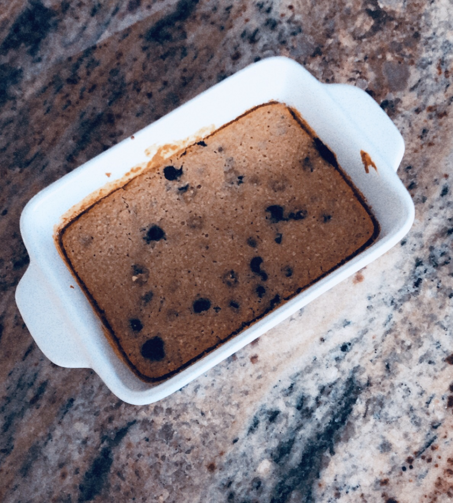

Welcome to my food blog!
My name is Mary Vogler and I am a Junior at the University of Michigan studying business and information science. I love food, health and wellness and I created this page to showcase some of my culinary creations! I am by no means a chef, but I am passionate about coming up with creative, nutritious recipes.
I hope you enjoy my page and that I inspire you to get cooking!